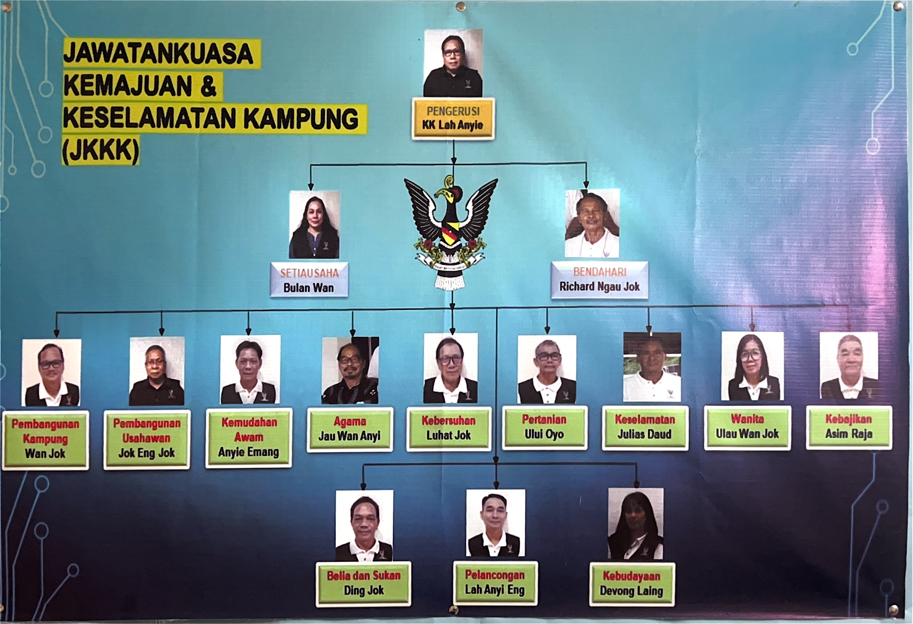

JKKK Long Bedian
Organisational Chart

Our Vision
"To make Kampung Long Bedian an advanced, resilient, and inclusive Modern Village through a smart community based on culture, technology, safety, and environmental sustainability."
Our Mission
- To enhance digital and infrastructure development to support modern life in the village.
- To build a smart community by encouraging the use of technology, digital education, and innovation among village residents.
- To strengthen community safety and unity through close cooperation between the JKKK, KK, and related agencies.
- To preserve environmental sustainability by practicing green, sustainable, and climate-friendly concepts.
- To uplift the culture and heritage of Long Bedian as the identity of the modern village smart community.